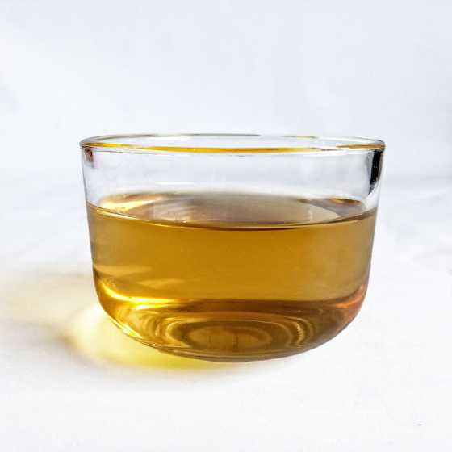
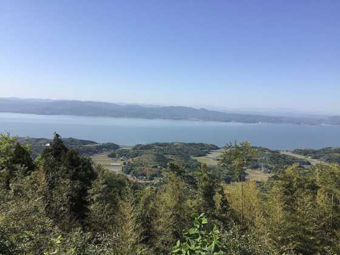
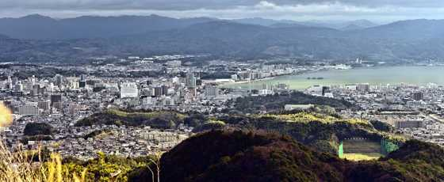
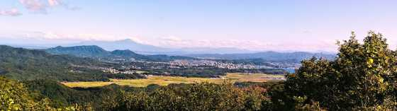

CONCEPT
お店の想い
Instagramのプロフィールでは、「頑張る女性のためのパーソナルヘッドスパ」と紹介されています。髪と頭皮を整える施術と、完全個室で静かに過ごせる時間を大切にしているお店です。(出典: 店舗Instagram @sui.spasalon)
屋号の「水」には、頭皮を洗い、うるおし、巡らせる水のイメージを重ねました。ただしこれは制作側のイメージで、店名の由来をお店が説明しているわけではありません。
だからこのページは、にぎやかにせず、水面のように静かに。ひと息つくための余白を大切にしています。
店名の意味や施術の詳細は、お店からご提供いただいた内容に合わせて整えます。


VOICE
お客様の声
イメージ例
個室で周りを気にせず過ごせて、あっという間でした。終わったあとは頭が軽くなった気がします。
30代・会社員(創作例)
イメージ例
仕事で張りつめた一週間の締めくくりに。静かな時間で、気持ちまで落ち着きました。
40代・パート(創作例)
イメージ例
髪や頭皮のことを丁寧に聞いてもらえて安心できました。また自分をいたわりに行きたいです。
20代・学生(創作例)
これらは掲載イメージとして制作側が作った例で、実際のお客様の声ではありません。



松江の景色(フリー素材のイメージ)。店舗の実際の様子ではありません。
ACCESS
アクセス
- 店名
- relaxing salon 水
- 住所
- 〒690-0012
島根県松江市古志原5丁目19-820 12 - 電話
- 準備中
- 営業時間
- 準備中
- 定休日
- 準備中
- @sui.spasalon